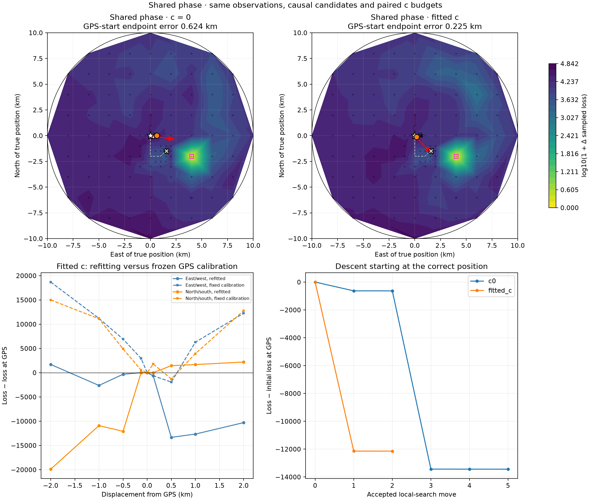
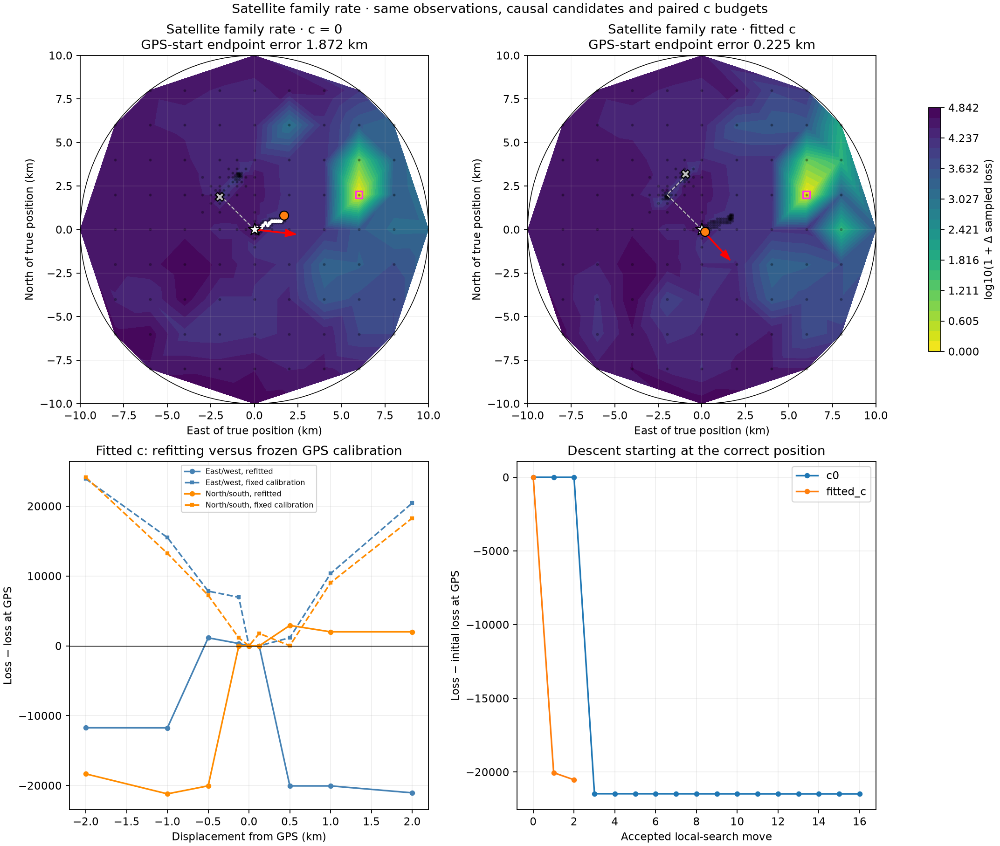
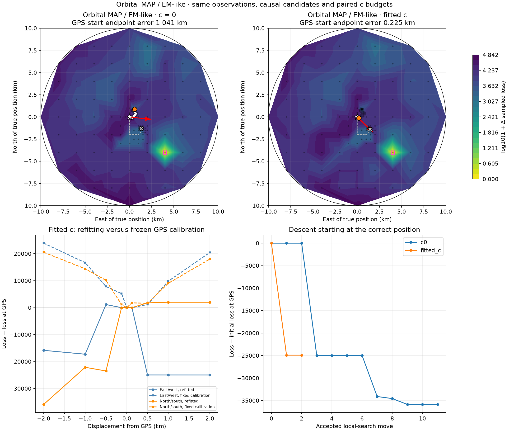
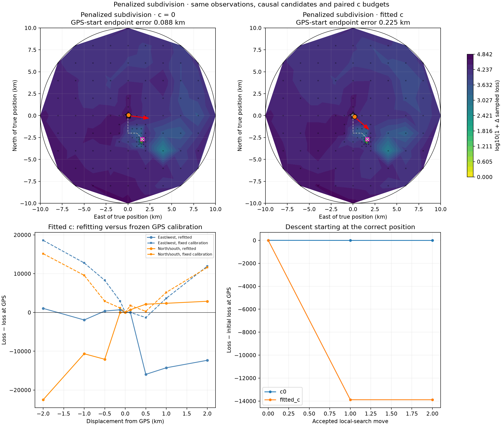
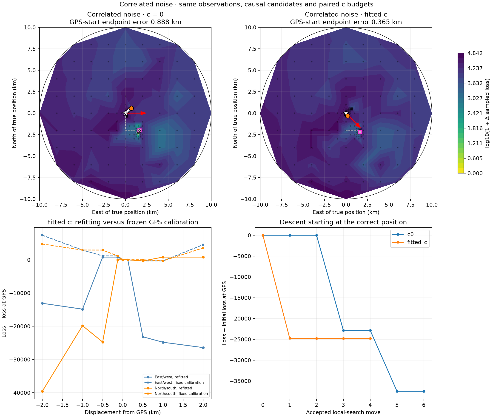
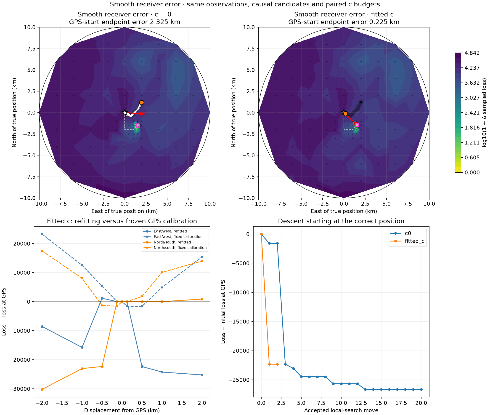

GPS defines the diagnostic region and starting point; this is not blind evaluation. Loss includes hard gates, clutter and complexity terms. It is not a calibrated probability. Every position uses the existing cold initializer with three nuisance-update rounds; this is the effective algorithm surface, not a proven exact profile likelihood. Dots are evaluated locations; contours are linear visual interpolation. Local endpoints are stencil minima to the recorded scale, not mathematical/global optimum guarantees.
| method | arm | endpoint_east_km | endpoint_north_km | endpoint_error_km | truth_loss | endpoint_loss | stationary_stencil_km |
|---|---|---|---|---|---|---|---|
| shared_phase | c0 | 0.625 | 0.0 | 0.6242986447118772 | 62658.72961358128 | 49216.69333935909 | 0.0625 |
| shared_phase | fitted_c | 0.1875 | -0.125 | 0.22529513318094127 | 62997.40982715562 | 50853.572904675144 | 0.0625 |
| family_rate | c0 | 1.6875 | 0.8125 | 1.871754621735181 | 58101.18659616453 | 36621.1643318541 | 0.0625 |
| family_rate | fitted_c | 0.1875 | -0.125 | 0.22529513318094127 | 58109.12476504299 | 37582.776028733235 | 0.0625 |
| orbit_em | c0 | 0.5625 | 0.875 | 1.04114421623738 | 58169.15193253333 | 22312.86886560837 | 0.0625 |
| orbit_em | fitted_c | 0.1875 | -0.125 | 0.22529513318094127 | 58185.45099618757 | 33282.443919488745 | 0.0625 |
| penalized_split | c0 | 0.0625 | 0.0625 | 0.08841634798815842 | 60232.31565427043 | 60222.39947092176 | 0.0625 |
| penalized_split | fitted_c | 0.1875 | -0.125 | 0.22529513318094127 | 60571.07376685569 | 46682.891844260615 | 0.0625 |
| correlated_noise | c0 | 0.6875 | 0.5625 | 0.8883034476117468 | 48904.97702935805 | 11424.754138889793 | 0.0625 |
| correlated_noise | fitted_c | 0.1875 | -0.3125 | 0.3647993153297755 | 49249.376264293205 | 24488.169006828564 | 0.0625 |
| receiver_smooth | c0 | 2.0 | 1.1875 | 2.324987271667283 | 53999.16979908102 | 27343.55244934042 | 0.0625 |
| receiver_smooth | fitted_c | 0.1875 | -0.125 | 0.22529513318094127 | 54007.182362766674 | 31677.094107381283 | 0.0625 |





